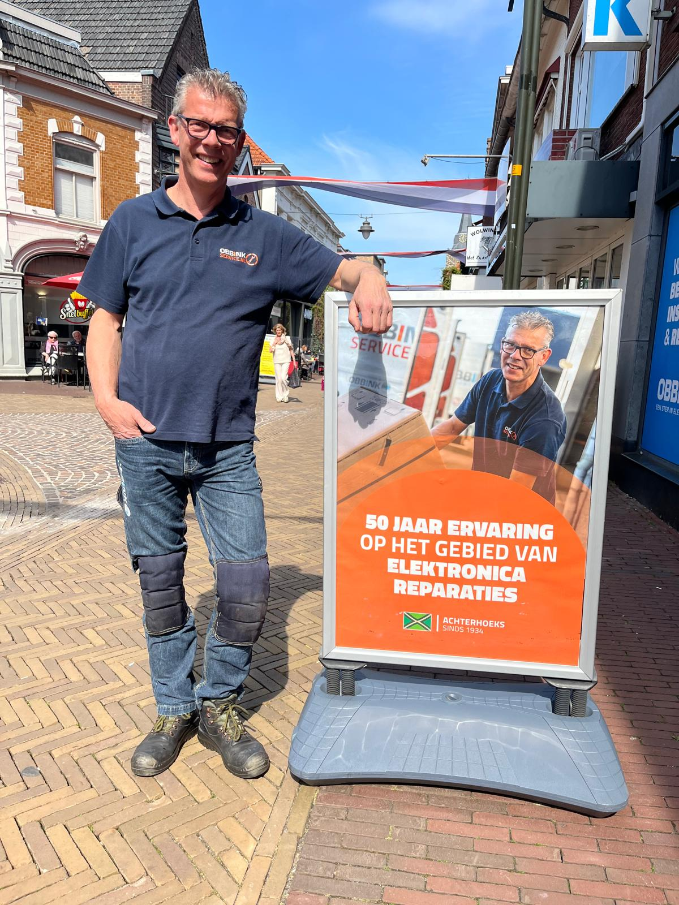

Apparatuur plaatsen & aansluiten
Wij plaatsen en sluiten apparatuur zorgvuldig aan en controleren of alles correct werkt voordat we vertrekken.
INSTALLATIE & MONTAGE
Een goede installatie stopt niet bij het neerzetten van een apparaat. Obbink Service verzorgt montage, aansluiting, instelling en oplevering voor thuis en zakelijke omgevingen. Van witgoed en televisie tot audio, netwerk en technische apparatuur.

ONZE INSTALLATIESERVICE
Wij plaatsen en sluiten apparatuur zorgvuldig aan en controleren of alles correct werkt voordat we vertrekken.
Van plaatsbepaling en wandmontage tot het netjes aansluiten en instellen van televisie en randapparatuur.
Montage en aansluiting van soundbars, audio-oplossingen en andere beeld- en geluidsapparatuur.
Netjes aangelegde bekabeling, montage van accessoires en technische oplossingen voor thuis en zakelijk.
Plaatsing, aansluiting en controle van inbouwapparatuur, inclusief technische afwerking.
Meer over inbouwapparatuur
GOED VOORBEREID OP PAD
Een goede installatie begint al vóór de monteur bij u aankomt. Apparatuur, onderdelen en montagematerialen worden voorbereid zodat onze monteurs efficiënt en zorgvuldig kunnen werken. Vanuit ons Service Center in Lichtenvoorde ondersteunen we dagelijks installaties en serviceopdrachten in de Achterhoek.
VAN AFSPRAAK TOT OPLEVERING
Wij bespreken wat er geplaatst of gemonteerd moet worden en welke situatie we op locatie aantreffen.
Onze monteur plaatst en monteert de apparatuur zorgvuldig.
Na installatie controleren we werking, aansluiting en instellingen.
U krijgt uitleg over het gebruik en we zorgen dat de werkplek of woning netjes wordt achtergelaten.
Witgoed, televisie, audio, wifi/netwerk, energieoplossingen en overige technische apparatuur.
Installatie aanvragenKantoren, winkels, zorg, horeca, professionele apparatuur en netwerk-, beeld- en geluidsoplossingen.
Meer over Obbink Zakelijk
ACHTERHOEKS SINDS 1934
Obbink Service combineert technische kennis met persoonlijke service. Vanuit Lichtenvoorde werken onze monteurs dagelijks in de regio. We kennen de omgeving, zijn snel bereikbaar en zorgen dat installatie en service praktisch en duidelijk geregeld zijn.
Onze servicebeloftenVertel ons wat er geplaatst, aangesloten of gemonteerd moet worden. Wij kijken graag met u mee naar een passende installatie-oplossing.